兩個人一起寫的
情侶日記
在一起久了，好的事會忘，吵過的架卻一直記得。啾啾日記是一本給兩個人的交換日記，把甜的時刻存起來，把吵過的架好好收著，等心情放晴再回頭看。
寫下第一個美好時刻 用手機瀏覽器打開就能寫，也能加到主畫面，用起來跟 App 一樣。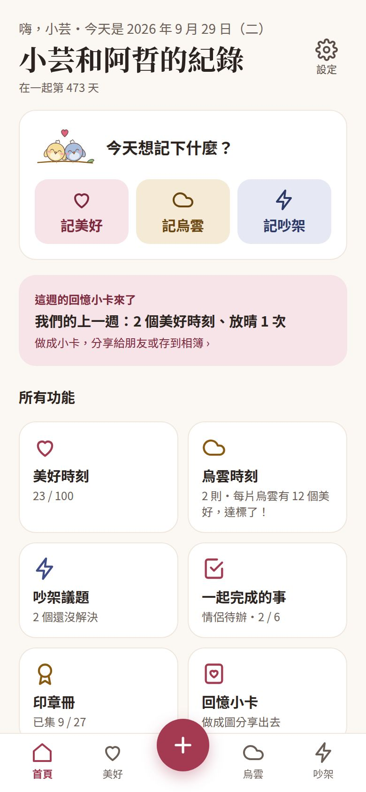
一起存滿100 個美好時刻
每一則都可以寫標題、日期和描述，放最多 9 張照片，選最多 3 個心情表情，再加上自己取名的感受標籤。看著進度條一點一點變長，會想起原來你們一起做過這麼多事。
- 往年同一天有美好時刻，首頁會出現一年前的今天回顧卡
- 美好時刻滿 1、5、10、30、50、100 個，印章冊會蓋一個章
- 另一半可以對你寫的美好時刻按愛心
- 用標籤篩選，想找「在家約會」的那幾次，一下就找到
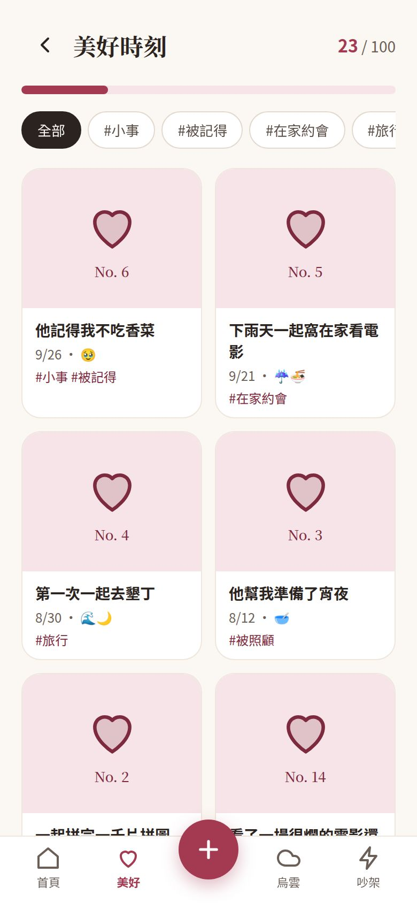
不開心的事，
先寫給自己看
不是每一天都很甜。烏雲時刻讓你把當下的委屈、失望先寫下來，預設是上鎖的，只有自己看得到。
- 事後反思：冷靜之後可以隨時補寫，想法怎麼改變，會依日期排成一條時間軸
- 已放晴：心情過去了按一下，這朵烏雲就散了
- 美好和烏雲的比例：首頁會顯示「美好 : 烏雲」，距離 5 : 1 還差幾個，提醒你們好的時刻其實比較多
其實我氣的不是遲到，是覺得自己不被在乎。說出來之後輕鬆很多。
── 9/22 的事後反思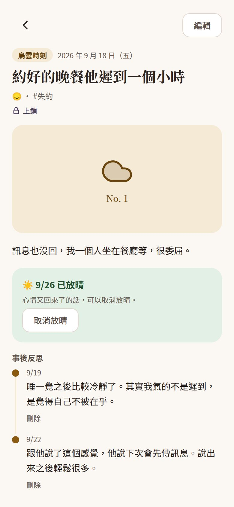
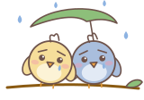
同一件事一直吵，
是因為上次沒講完
吵架議題把每一次爭執整理成一張卡，兩個人都看得到，也能一起更新。
- 分類：溝通、金錢、家人朋友、生活習慣……分類也能自己新增
- 原因和雙方各自的想法分開寫，不會混在一起
- 後續紀錄：之後想到什麼、做了什麼改變，都能一直補上，標示是誰寫的
- 按分類統計，看得出你們最常為什麼吵
和好之後按「已解決」，印章冊會多一個和好章。
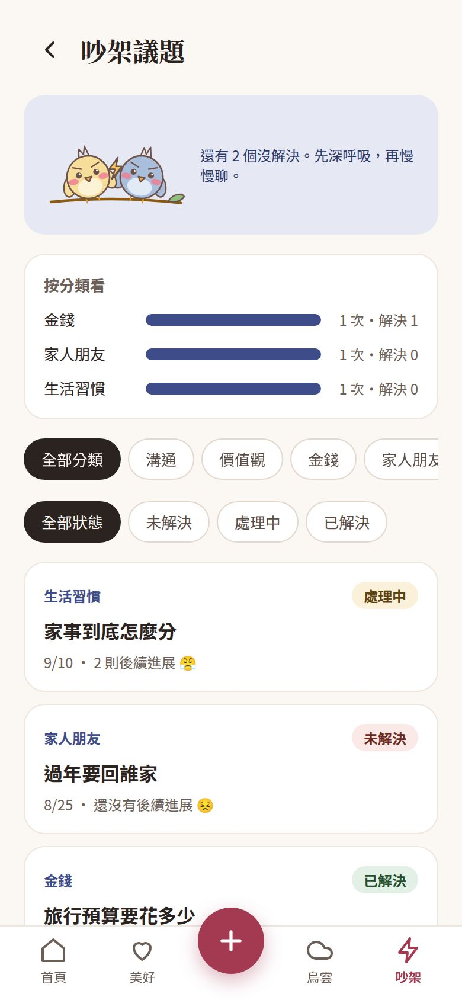
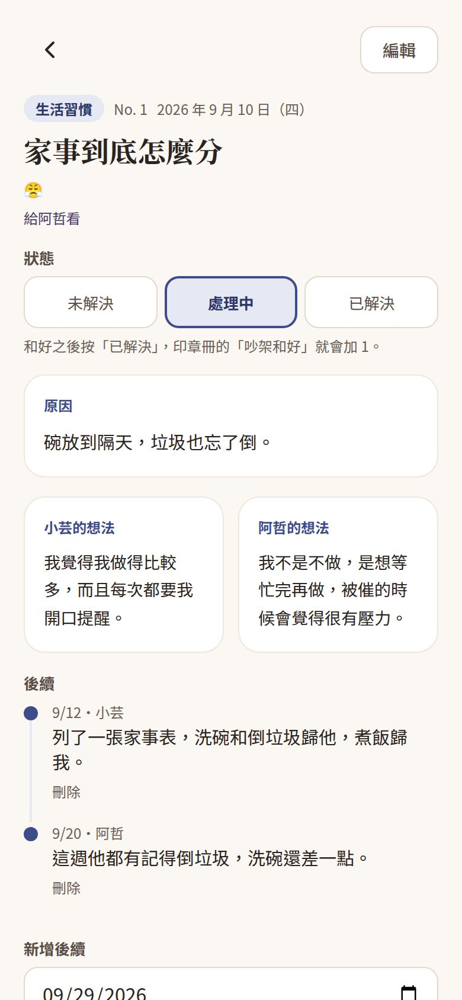
誰可以看，
由寫的人決定
每一則紀錄都能選：
- 給對方看：另一半直接看得到
- 上鎖：只有自己看得到，對方只會看到「有一則上鎖的紀錄」
- 任務解鎖：幫這則紀錄出一個小任務，對方完成後由你確認，紀錄才打開。任務可以要求上傳照片當證明
美好時刻預設給對方看，烏雲時刻預設上鎖。兩個人都能出任務給對方，想說又說不出口的話，就讓它變成一個小遊戲。
帶我去吃早午餐，拍一張合照給我。
── 任務範例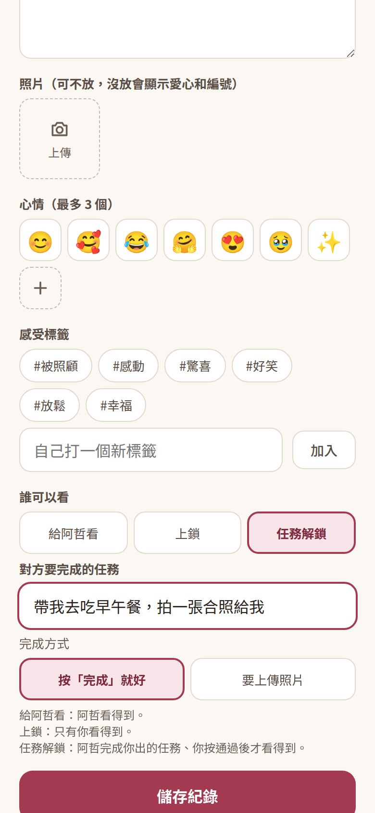
想一起做的事，
做完就蓋一個章
一起完成的事是兩個人共用的待辦清單。想去的餐廳、想看的電影、想一起做的 100 件事都可以寫進來，完成後打勾，一鍵就能記成一則美好時刻。
印章冊收著你們一路走來的里程碑：美好時刻的數量、吵架和好、烏雲放晴、寫下反思、完成任務、在一起的天數。達到就蓋章，還會跳出慶祝畫面。
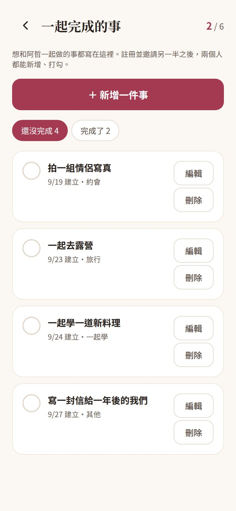
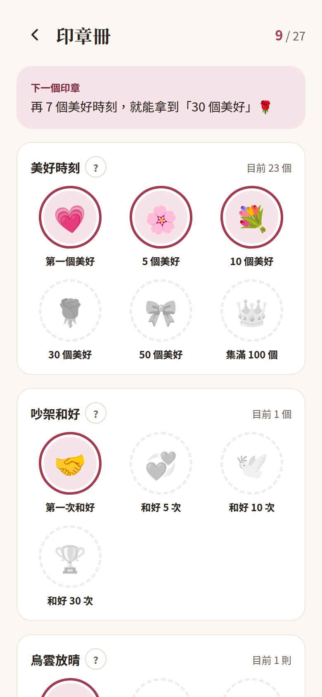
把回憶做成一張小卡
每週、每月的回顧，單則美好時刻，或是在一起的天數、週年紀念，都可以做成一張手帳風的小卡。有限動直式和貼文方形兩種尺寸，存到相簿或分享到 IG、LINE。
- 小卡只放美好時刻和統計數字，烏雲、吵架和上鎖的內容一律不會出現
- 填上在一起的日期，首頁會顯示在一起第幾天；每週、每月的回顧小卡準備好了，首頁也會提醒你
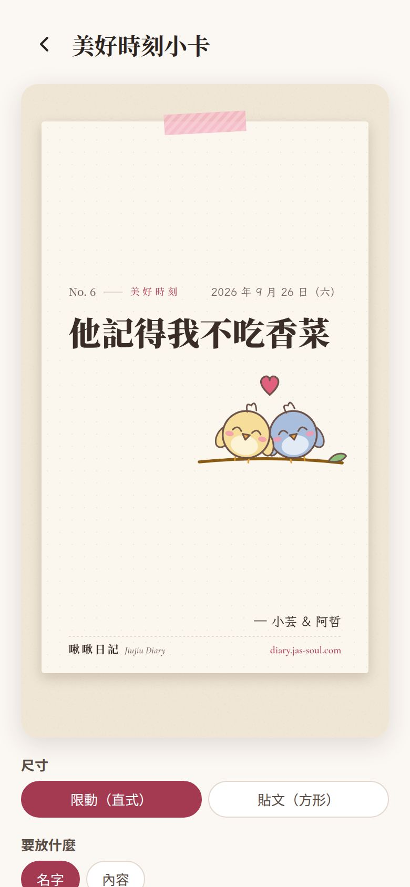
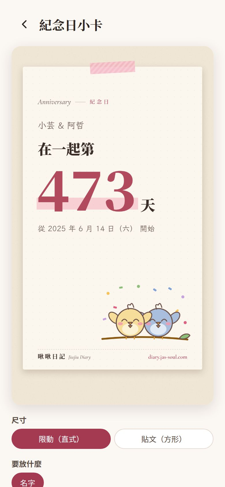
邀請另一半，一起寫，也能各寫各的
註冊後在設定頁產生分享碼，把邀請連結傳給另一半。對方加入時要你按「同意」才算數，所以一組分享碼同時只會有一位另一半。另一半綁定 Email 或 Google 後，也能寫自己的美好時刻、烏雲時刻，放自己的照片。美好時刻的 100 個目標兩個人一起累積，列表可以切換「全部、我的、對方的」。
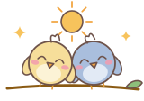
對方有新動態，你會知道
另一半新增了美好時刻、完成任務或確認了你的任務，App 裡會有通知。一陣子沒打開的話，會合併成一封 Email，一小時最多一封，信裡不放紀錄內容。
需要空間的時候
「暫停分享」讓另一半暫時看不到你寫的東西，隨時可以恢復。
隱私和安全
每個人只讀得到被允許看的內容，照片空間不公開。還可以開 4 位數的 App 密碼鎖。
刪錯了也救得回來
刪掉的紀錄會先放在「最近刪除」30 天。也可以隨時匯出備份，或匯出點開就能閱讀、列印的版本。
先試用，再註冊
打開就能直接寫，資料先存在手機。註冊後會自動搬上雲端，換手機也不會不見。
貼心的小地方
寫到一半離開會存草稿、深色模式、標籤改名、吉祥物啾啾和啵啵的顏色也能自己挑。
如果這段關係結束了
可以把回憶封存起來只留給自己，或全部刪除。兩種做法都會讓對方無法再看到。
常見問題
啾啾日記要下載嗎？
不用到 App Store 下載。用手機的 Safari 或 Chrome 打開 diary.jas-soul.com 就能用，也可以加到主畫面，之後像一般 App 一樣從桌面打開。
需要註冊才能用嗎？
打開就能先試用，紀錄會先存在手機裡。想換手機也看得到、或想分享給另一半，再用 Email 或 Google 註冊就好，之前寫的紀錄會自動搬上雲端。
另一半看得到我寫的所有東西嗎？
不會。每一則紀錄都可以選「給對方看」、「上鎖」或「任務解鎖」。上鎖的紀錄對方只看得到「有一則上鎖」，看不到內容。你也可以隨時暫停分享。
吵架後可以怎麼用啾啾日記？
先用烏雲時刻把當下的感受寫下來，不用急著給對方看。冷靜之後，再開一個吵架議題，兩個人各自寫下自己的想法，一起決定怎麼處理，之後的進展也可以一直補上去。
任務解鎖是什麼？
你可以幫一則紀錄出一個小任務，例如「帶我去吃早午餐」。對方完成、送出後由你確認，紀錄才會打開給對方看。任務可以要求上傳照片當作證明。
照片有張數限制嗎？
每則紀錄最多 9 張。沒登入時照片存在手機，沒有總張數限制；雲端帳號目前可以存 30 張照片，兩個人共用。
資料會不會不見？
註冊後紀錄和照片存在雲端，換手機登入就看得到。刪掉的紀錄會在「最近刪除」保留 30 天，你也可以隨時匯出備份檔。
分手了紀錄怎麼辦？
設定頁有「結束這段關係」，可以把紀錄封存起來只留給自己，或全部刪除。兩種做法都會讓對方無法再看到。
適合什麼樣的情侶？
想留下相處點滴的情侶、遠距離戀愛、常為同一件事吵架想好好談開的，或是想和另一半一起完成 100 件事的，都很適合。
頁面上的畫面都是 App 的實際畫面，名字和內容是示範用的。